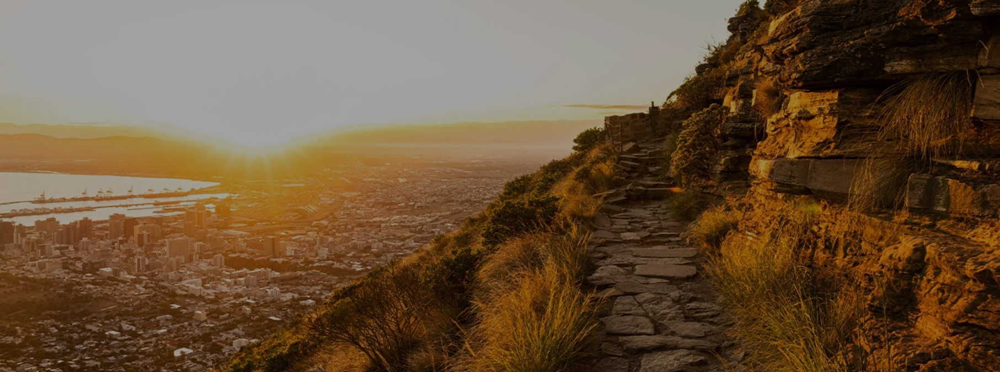
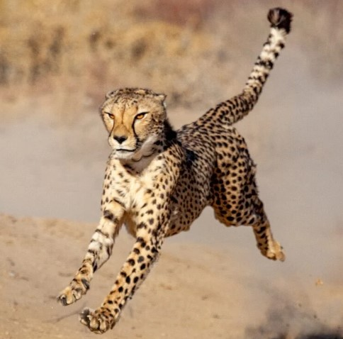
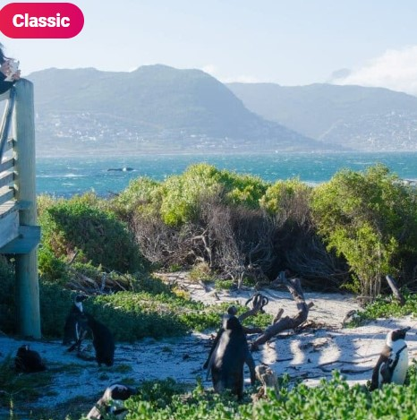
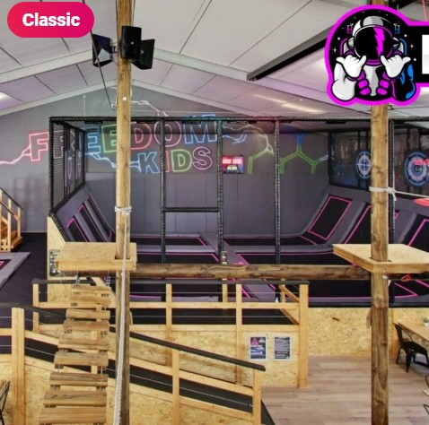
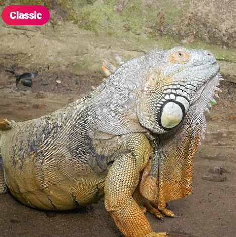
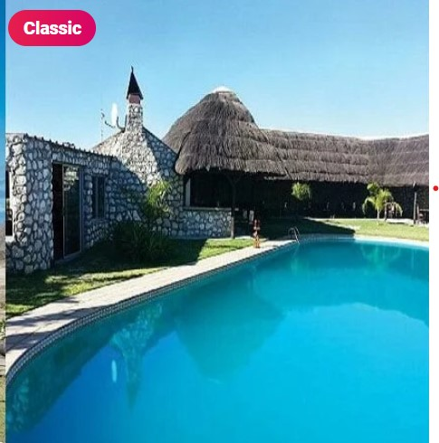

Nature Activities & Attractions
Marrakesh is the perfect place for outdoor enthusiasts of all stripes. From hiking and climbing to birdwatching and stargazing, there’s no shortage of ways to connect with the natural world in this beautiful city.
Nature lovers will find plenty to explore in Marrakesh’s many national parks, botanical gardens, and nature reserves. Table Mountain National Park offers incredible views of the city, as well as opportunities for hiking, biking, and rock climbing.
Popular Nature Activities & Attractions
All the news that makes the headlines of the city of Marrakech: trends, tourism, people, culture, outings, news, ...



Aquila Private Game Reserve & Spa
Freedom Adventure Park
Boulders Beach



Butterfly Worl
The Elephent
Nature Reserve